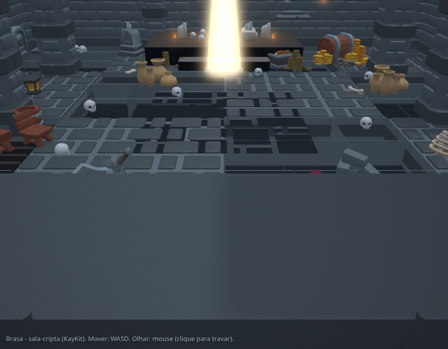

RPG de acao low-poly . roda no navegador
Brasa
A chama ancestral esta morrendo, e os mortos despertam no escuro. Desca o poco-cripta, reacenda os braseiros e reavive a Brasa antes que a superficie congele.
Funciona no Chrome, Edge e Firefox recentes. Recomendado em desktop.
Voce e a ultima Acendedora
Enquanto a Brasa arde no fundo do poco, a superficie tem calor e vida. Voce carrega a ultima fagulha do fogo. A cada camara selada que voce limpa, um braseiro pode ser aceso: a luz quente volta, a porta seguinte se abre, e o escuro recua um pouco mais para baixo.
- 01 Entre na camara selada, em penumbra fria.
- 02 Os mortos despertam: combate melee, esquiva, bloqueio e o golpe de fogo.
- 03 Sala limpa, acenda o braseiro: luz, uma dadiva e a saida destravada.
- 04 Desca ate o Guardiao da Brasa apagada.

Feito para rodar leve
Uma sala por vez
O mundo e contido: so uma camara fica carregada de cada vez. A premissa narrativa e a otimizacao tecnica sao a mesma coisa.
WebGPU com fallback
Babylon.js 9 tenta WebGPU e cai para WebGL2 sem travar. Fisica Havok em WASM. Nada para instalar: abre e joga.
Arte CC0
Personagens, inimigos e cenario vem de pacotes CC0 (KayKit, Quaternius) num estilo unico e coeso.